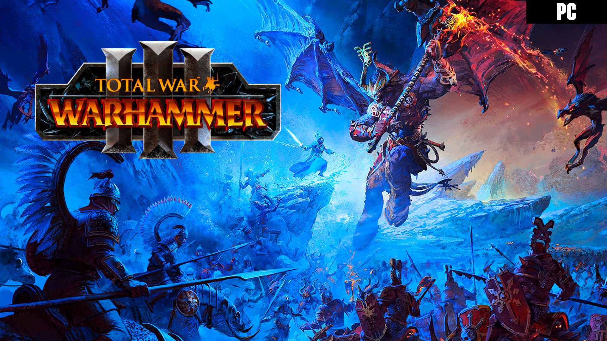
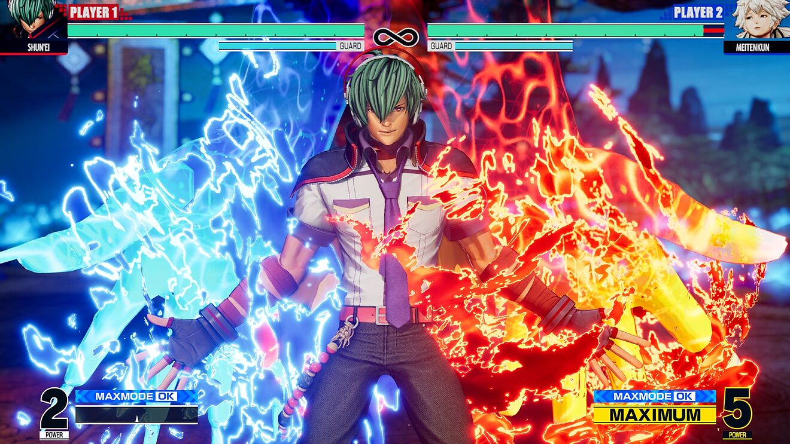
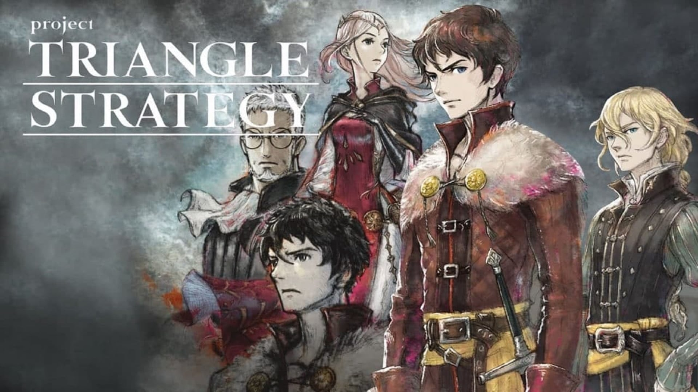
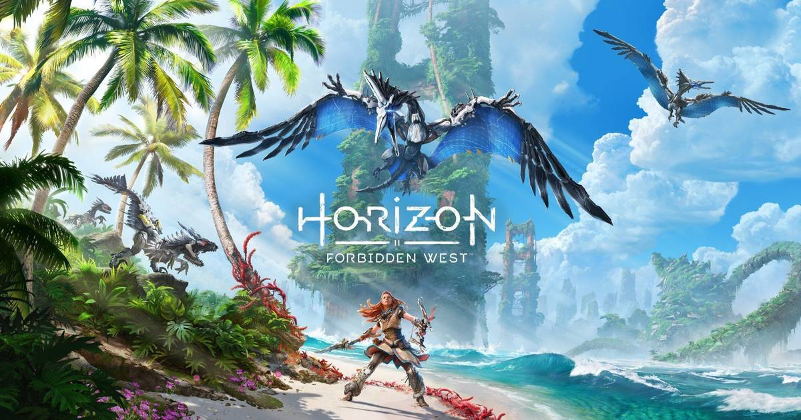
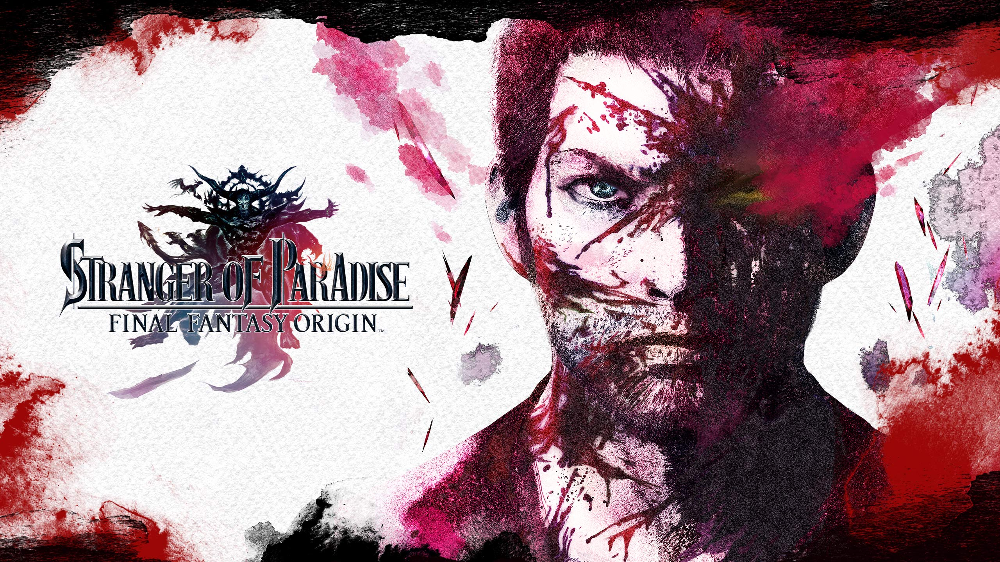
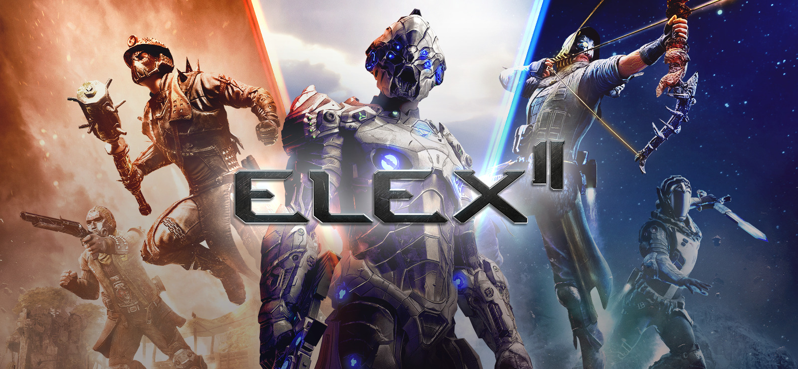
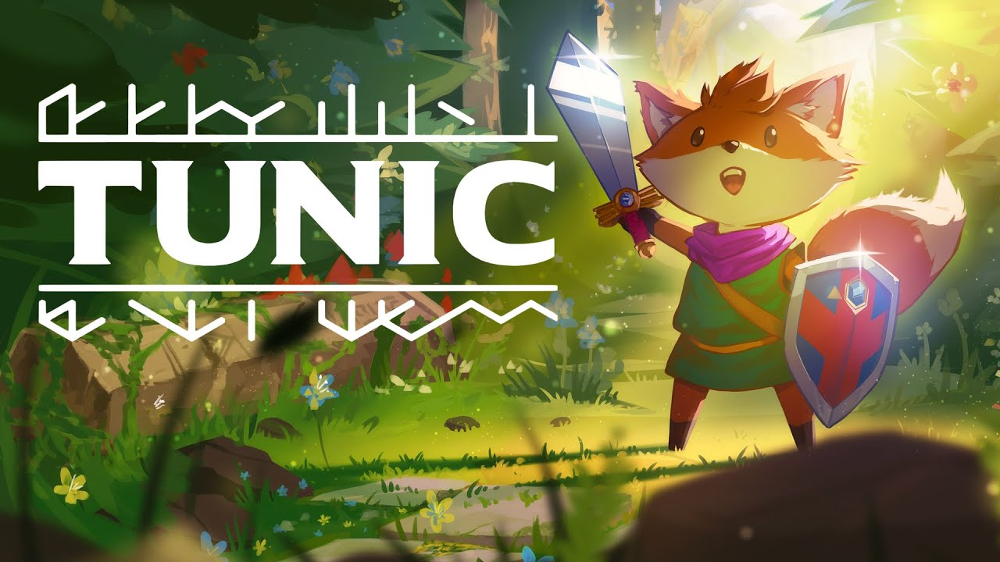
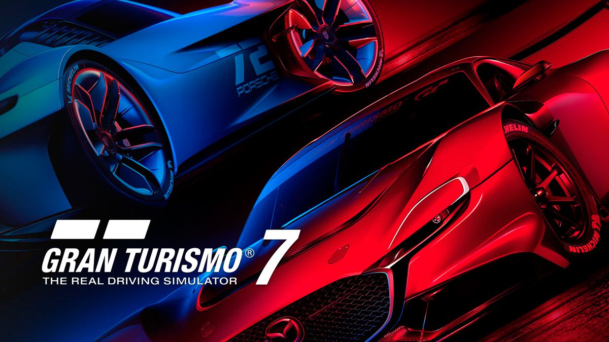

NUEVOS TÍTULOS
Elden Ring

La historia de Elden Ring es la del Sinluz, un exiliado que regresa a un marchito y enorme reino conocido como las Tierras Intermedias. Su propósito: reclamar el poder del Círculo de Elden. Una gesta que lo enfrentará a criaturas de pesadilla y un cruel destino.
Total Warhammer 3
Reagrupa a tus fuerzas y adéntrate en el Reino del Caos, una dimensión de terrores horripilantes en la que se decidirá el destino del mundo. ¿Conquistarás a tus demonios... o los dirigirás? Total War: Warhammer III es un videojuego de estrategia a cargo de The Creative Assembly y Sega para PC.1
The King of Fighters XV
KoF XV vuelve a traernos un adictivo juego de lucha 2D con opción de seleccionar tres personajes para combates por equipos, si bien también existe la posibilidad de luchar en un 1v1 clásico. Es una lástima que otras sagas del género hayan descartado poco a poco el 2v2 o 3v3, o lo reserven para entregas puntuales –caso de los Tekken Tag Tournament -, así que es de agradecer que SNK lo mantenga en este juego.
Triangle Strategy
Análisis, toma de decisiones y una narrativa madura son los tres componentes que definen a Triangle Strategy, el título más reciente de Square Enix para Nintendo Switch, un juego que apuesta por una buena historia y mecánicas sencillas, pero efectivas, en el género del RPG táctico.
Horizon Forbidden West
En esta nueva entrega la historia girará en torno a la plaga roja, una especie de infección que se propaga por la tierra acabando con todas las formas de vida vegetales y animales. El efecto se parece mucho al rojo de La Guerra de los Mundos de Spielberg, por cierto. Nuestra misión es detener esa plaga viajando a los vestigios del mundo antiguo en busca de una tecnología que pueda acabar con la dichosa plaga.
Stranger of Paradise Final Fantasy Origin
Stranger of Paradise tiene lugar en un "mundo de fantasía oscura", narrando una historia protagonizada por Jack y sus compañeros Ash y Jed, tres Guerreros de la Luz en una misión para destruir a Caos. A ellos se les unen más tarde Neon y Sofía.
Elex 2
Varios años después de que Jax derrotara al Híbrido, llega una nueva amenaza desde el cielo, desatando los peligrosos poderes del oscuro Elex y poniendo en peligro toda la vida en el planeta. Para defender la paz en Magalan y la seguridad de su propia familia, Jax se embarca en una misión para convencer a las facciones de que se unan contra los invasores, así como en una búsqueda personal para encontrar a su hijo, Dex, que se separó de él
TUNIC
¿Quieres un juego estilo Zelda y con elementos de dificultad que recuerdan a los Souls-like? Tunic es la respuesta, y además no es solamente un homenaje al clásico de Nintendo, sino un título con identidad propia, con una esencia retro-moderna que no te deberías perder. Te lo cuento en este análisis.
Gran Turismo 7
Gran Turismo 7 contará, una vez más, con un catálogo ingente de coches con las mejores marcas y carrocerías del mundo del automovilismo , así como con una gran variedad de modos de juego para un jugador. Se trata de un título que, en palabras del jefe del estudio Kazunori Yamauchi no busca hacer ningún tipo de concesión en su propuesta de simulación, apostando por el realismo más tangible en PlayStation 5.